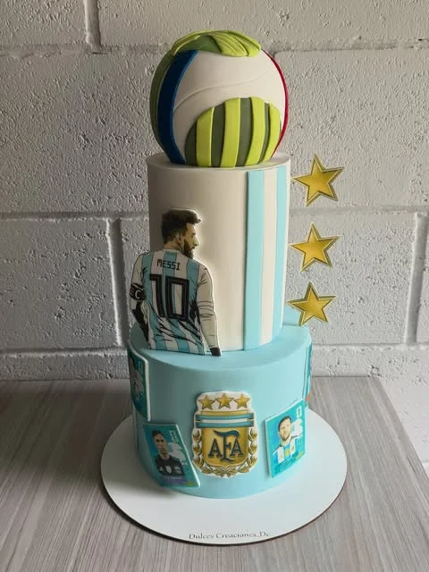

Todos los equipos
Boca, River, San Lorenzo, Racing, Independiente y cualquier club argentino. Adaptamos escudo, camiseta, colores y detalles según la pasión de cada hincha.

Tortas de Fútbol · TemperleyBoca · River · San Lorenzo · Racing · Independiente
Pedir mi torta de fútbolHay quienes prefieren la camiseta, otros el escudo o una versión más sobria con los colores del club. La gracia está en que la torta se note futbolera sin perder prolijidad.
Boca, River, San Lorenzo, Racing, Independiente y cualquier club argentino. Adaptamos escudo, camiseta, colores y detalles según la pasión de cada hincha.
Podemos sumar número, nombre del homenajeado o referencias al jugador favorito para que la torta tenga una identidad más personal y memorable.
Buscamos que el diseño se vea festivo y reconocible, pero también bien terminado, para que funcione tanto en fotos como en mesa principal.
Tortas personalizadas con camisetas, escudos y colores de tu equipo favorito.

¿Tenés otra idea?
Contanos la temática, la fecha y la cantidad de invitados y te pasamos el presupuesto sin cargo.
Consultar por WhatsAppHacemos tortas de todos los equipos argentinos. Solo indicanos tu club y el diseño que preferís.
Azul y oro, La Bombonera, escudo xeneize. La torta ideal para el hincha más pasional.
ConsultarBlanco con la banda roja, El Monumental, escudo millonario. Para el hincha de verdad.
ConsultarCeleste y blanco, El Cilindro, La Academia. Para el hincha de Avellaneda.
Rojo, El Rojo de Avellaneda, Rey de Copas. Para el hincha del Diablo.
Estudiantes, Gimnasia, Newell's, Rosario Central, Vélez, Huracán... ¿Tu equipo? ¡Consultanos!
Consultar mi equipoLa torta con forma de camiseta, número y nombre del jugador favorito. El clásico de los hinchas.
El escudo en relieve o impreso comestible, con los colores oficiales del club y detalles dorados.
¿Querés combinar fútbol con otro tema? Superhéroes, juegos, anime... Todo es posible.
Recomendamos 10 días de anticipación mínimo. Para fechas de superclásico o finales, consultá con más tiempo.
Las tortas se retiran personalmente en Temperley. Coordinamos día y horario para que pases a buscar tu pedido.
Indicanos equipo, jugador favorito, número, colores y cualquier detalle especial que quieras incluir.
Escribinos y creamos la torta perfecta para el hincha de tu casa
Pedir por WhatsAppDescubri todos nuestros diseños de tortas personalizadas
Sí, realizamos tortas de fútbol de todos los equipos argentinos: Boca Juniors, River Plate, San Lorenzo, Racing, Independiente, Estudiantes, Gimnasia, Newell's, Rosario Central, Vélez, Huracán, y cualquier otro equipo que prefieras.
Recomendamos encargar con al menos 10 días de anticipación para tortas temáticas de fútbol, ya que el diseño de la camiseta o escudo requiere trabajo detallado.
Absolutamente. Podemos personalizar la torta con el número y nombre de tu jugador favorito, el escudo del club, los colores oficiales y cualquier detalle que haga única la torta para el hincha.
Las tortas se retiran personalmente en nuestra ubicación en Temperley, Buenos Aires. Coordinamos día y horario para que pases a buscar tu pedido.
Agregá Dulces Creaciones a tu pantalla
Accedé rápido a nuestros diseños